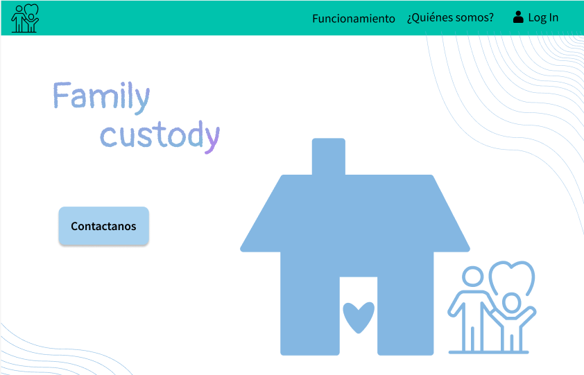
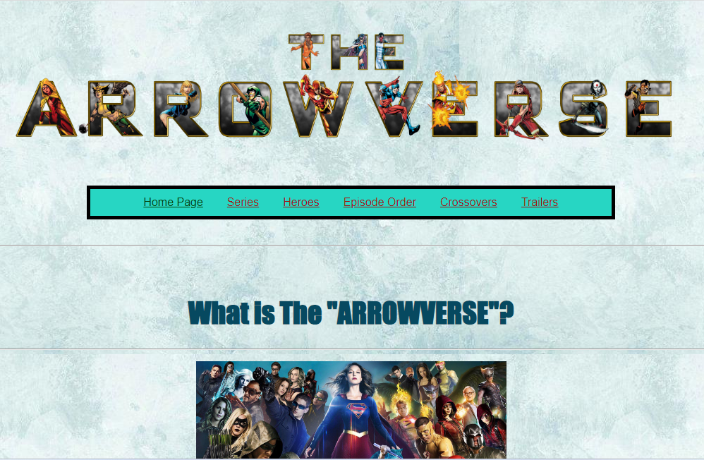

Mis proyectos recientes
Estos son algunos proyectos que he creado recientemente...



Soy estudiante de Tecnolochicas PRO. Soy de Axtla de Terrzas, San Luis Potosí. Estudio Ingeniería de Software en la Universidad Autónoma de Querétaro. Me gusta mucho la porgramación y aprender sobre tecnología. Curso el segundo semestre de mi carrera, pero hasta ahora me ha gustado mucho todo lo que he aprendido y lo que puedo llegar a hacer laboralmente. Me quiero dedicar al desarrollo de apicaciones móviles o aplicaciones web.
Desarrollo Web
Construyo sitios web responsivos, funcionales y modernos utilizando diferentes tecnologías y frameworks de acuerdo a las tendencias.
Proyectos
Formo parte de Centro de Desarrollo, un grupo de mi facultad que se dedica al desarrollo de proyectos de Software. Actualmente estoy en un proyecto que tiene el objetivo de luchar contra micromachismos y buscar la equidad de género.
Estudiante
Soy estudiante de segundo semestre de la carrera de Ingeniería de Software en la Facultad de Informática de la Universidad Autónoma de Querétaro.